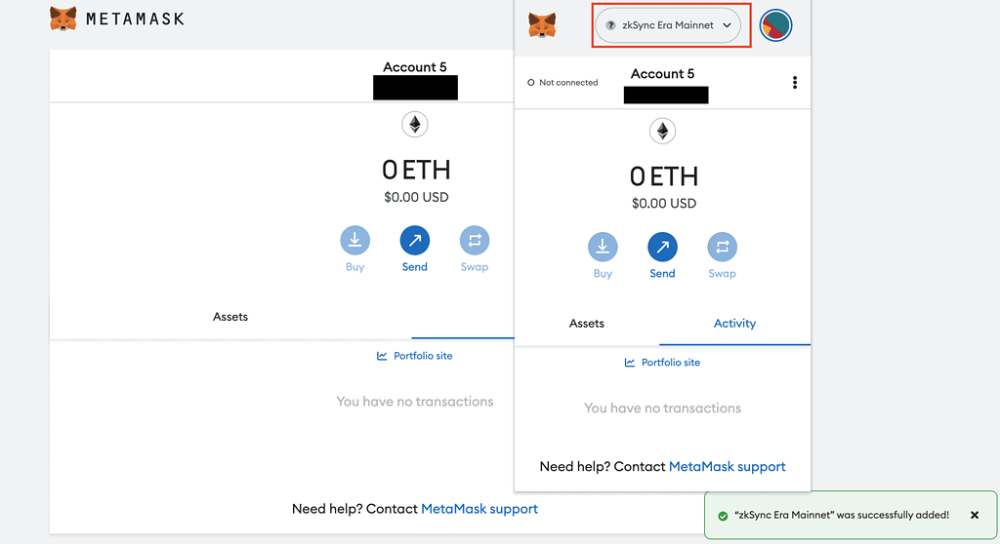

ZkSync™ | Official Site
zkSync is a layer-2 scaling solution designed to speed up transactions and lower gas fees on Ethereum. zkSync also has a huge ecosystem of dapps built on it- but no token yet. So, getting ready for a potential zkSync airdrop could entitle you to both a zkSync ($ZKS) and an ecosystem project airdrop! Here’s how to get a potential zkSync ($ZKS) token and ecosystem airdrop and DOUBLE your rewards.
Bridges & Wallets
View your assets and interact with zkSync. Use a native bridge or ecosystem partners to transfer tokens from Era to Ethereum or other networks.
zkSync ($ZKS) Airdrop Step-by-step Guide
Here’s how to receive a potential zkSync ($ZKS) token airdrop:
- Add zkSync Era Alpha Mainnet on MetaMask.
- Bridge Funds to zkSync Lite and zkSync Era Mainnet.
- Interact with zkSync Lite and zkSync Era Mainnet Alpha.
- Interact with the zkSync ecosystem.
- Complete quests on zkSync’s Crew3.
- Bonus: Complete zkSync Era tasks on RabbitHole.
zkSync Era and zkSync Lite?
At its inception, zkSync lacked support for smart contracts, preventing activities such as using DeFi or purchasing NFTs, which are common on Ethereum. However, it did provide significant scaling for Ethereum, leading to its nickname “zkSync Lite.
The zkSync Era represents an upgrade to the network, delivering all the features of Ethereum while also providing more cost-effective and faster transactions.
Does zkSync have a Token?
There is no zkSync token YET. But the ticker will potentially be $ZKS. On 16th February 2023, zkSync launched its Fair Onboarding Alpha, and on 24th March 2023, zkSync Era Mainnet Alpha became open to public. Meanwhile, zkSync 1.0 will be renamed zkSync Lite.
Add zkSync Era Alpha Mainnet on MetaMaskYou will need to connect zkSync Era alpha mainnet to your MetaMask. To do this, go to your MetaMask and click on the network button, then “Add network”. Then, click “Add a network manually”. Add the following information and click “Save”:
- Network Name: zkSync Era Mainnet
- New RPC URL: https://mainnet.era.zksync.io
- Chain ID: 324
- Currency Symbol: ETH
- Block Explorer URL: https://explorer.zksync.io/
- WebSocket URL: wss://mainnet.era.zksync.io/ws
Bridge Funds to zkSync Era Mainnet and zkSync Lite
Bridge funds from Ethereum Mainnet to zkSync Era Mainnet at bridge.zksync.io by connecting your wallet. Select the amount you wish to bridge and click “deposit”. Then, swap back to Ethereum Mainnet by clicking the arrows, choosing the amount you wish to bridge back to Ethereum, and click “Withdraw”.
Best zkSync Airdrop Routes?
- Swap ETH for USDC
- Swap USDC for WETH
- Swap WETH for USDT
- Swap USDT for USDC
- Swap USDC for ETH
- Swap ETH for BUSD
- Swap BUSD for ETH
Best zkSync Airdrop Routes?
- Add zkSync Era Alpha Mainnet on MetaMask;
- Bridge funds to zkSync;
- Interact with zkSync Lite and zkSync Era Mainnet Alpha;
- Move funds to Orbiter Finance;
- Trade on ZigZag Exchange;
- Set up and use Argent Wallet;
- Test out the Onchain Trade protocol;
- Donate on Gitcoin; and
- Complete quests on Crew3.
Conclusion
When reviewing an airdrop, there are several factors to consider. First, the likelihood the project will even do an airdrop in the first place. Then, to look at how many tokens the project intends to allocate towards airdrop campaigns, as well as the difficulty in participating in their airdrop. It is also important to look at the utility of the token so that there will be an actual use and purpose in participating in the airdrop in the first place. Finally, a factor to consider when reviewing an airdrop is whether the airdropped tokens are subject to any lockup period.zksync.